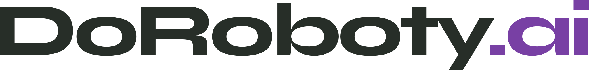
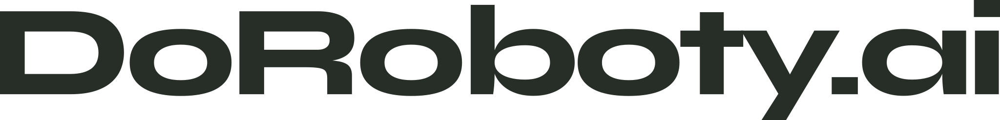

Podstawowy

Na papierowym i jasnym tle. Fioletowe .ai pozostaje akcentem marki.
DoRoboty.ai / marka / web v1.2 · Orbital B.02
Ten sam wordmark, teraz także w plikach niezależnych od fontu. Wariant podstawowy, jednobarwny, odwrócony i ikona dla małych formatów.
Podstawowy

Na papierowym i jasnym tle. Fioletowe .ai pozostaje akcentem marki.
Jednobarwny

Ciemny znak na jasnym tle. Do zastosowań z jednym kolorem.
Odwrócony

Biały znak na ciemnym tle. Bez cienia i dodatkowego obrysu.
Favicon / propozycja v1.1
Litera D z Syne na fioletowym polu. Uproszczenie znaku na kartę przeglądarki.
Zasady użycia / propozycja v1.1
144 px szerokości dla pełnego znaku. W małych formatach stosuj ikonę D — tutaj pokazujemy ją również w docelowych 16 i 32 px.
Minimum jedna wysokość widocznych liter wokół samodzielnego znaku. SVG ma ciasny obszar rysunku; przestrzeń dodajesz w układzie.
Nie rozciągaj, nie obracaj i nie zastępuj fioletu kolorem kategorii. W menu pozostaje obecny wordmark tekstowy Syne.
Pliki RGB/sRGB do webu, PNG z przezroczystością. Pakiet zawiera informację o źródłowym foncie Syne. Specyfikacja druku i CMYK pozostaje poza tym zestawem.
Orbital B.02: osobny element wizualny, towarzyszący treści. Zachowuje niebieski Build, zielony Apply i fioletowy Lead.